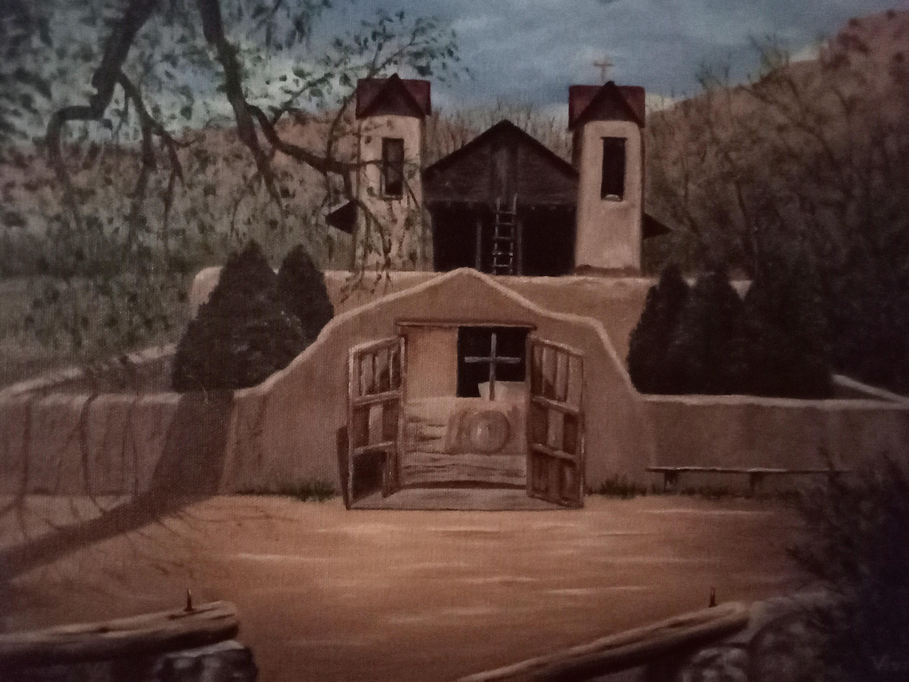
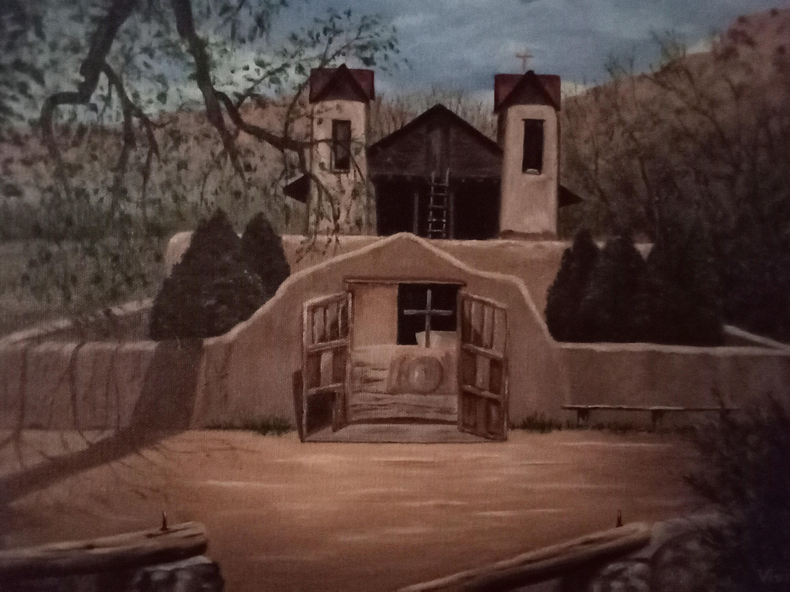
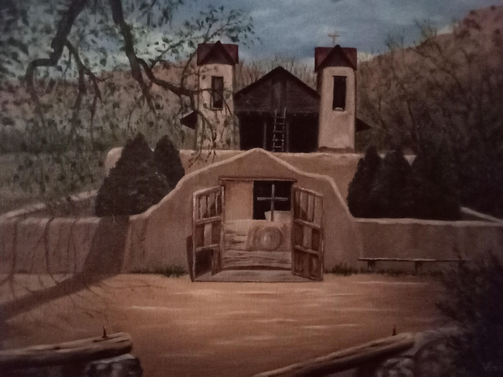

Select (or upload) an image before beginning. See explanation below for options.

Next Seed:
The mapping from the canvas to the base image used to select colors is determined by a unique number or seed. This
unique number is usually determined randomly, but you can type one in here if you have already determined a mapping you like. Either way, click the button to generate an image.
or Select Complexity:
The complexity is the depth of the parse tree for the reflection functions. Higher complexity means more complicated functions. This may make the image more convoluted, and it may take longer to generate a high resolution image.
Last Seed:
This is the seed that was last used to generate an image. Sometimes, you may want to generate an image using the same
seed or color mapping after you have changed other options. Use this button for that.
This option will copy one triangle of the generated image 8 times to create a highly symmetric image. Sometimes, this is
a good way to turn a meh image into a decent image. Other times, it is simply too cliche.
The standard algorithm does not recognize the edges of the canvas, and a pattern can extend off the canvas. This option
will cause the image to bend away from the edges without an apparent clipping effect. A value of 2 will isolate the image
to a circle. Higher values will make the image area closer to a square.
Sometimes, it may seem like the algorithm is stuck in an unimpressive groove. This is merely psychological, but
if it makes you feel better, you can click this button to restart the randomization process.
If you are tired of clicking the generate button over and over, you can click the Shotgun button.
This will generate several images at a time and add them to the bottom of the page.
Click on the one you want, and the seed for that image will be copied to the Next Seed input above.
Do not do this unless you mean it. This image is slower to generate. Note, the image above will not change size. When the high resolution image is generated, you will receive a notice. When you download the image above, you will receive a larger version.
 
